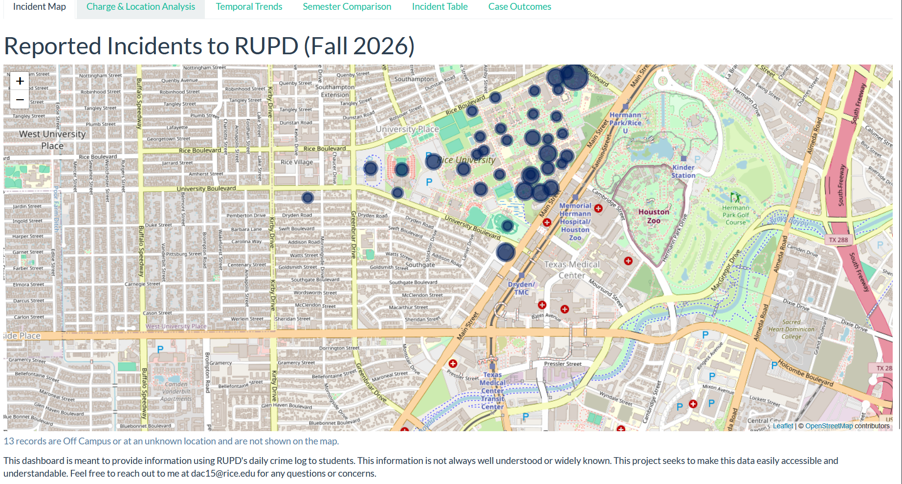

SELECTED WORK
Studies, dashboards, reports, and scouting work — from the MVP race to campus data ethics.
Studies, dashboards, reports, and scouting work — from the MVP race to campus data ethics.

An analysis of NBA player performances and voting patterns from 1956–2025. Using regression on PPG, Win Shares, PER, and games played, the study builds an Optimal MVP Profile and tracks the 2025–26 race week by week.
Read the Study →
An R Shiny dashboard that turns Rice University's public crime log into maps, charge breakdowns, time-of-day trends, and case outcomes — built to the NIST AI Risk Management Framework, with jittered locations and reporting-time data to protect the people behind each record.
See the Project →
Why Win Shares are a tighter, more reliable predictor of MVP vote share than raw scoring.

Mapping MVP performance by birthplace to show the award's shift to a borderless talent pool.
How jittered locations and reporting-time data keep the RUPD dashboard informative without identifying anyone.
Written analytics reports on the 2023–24 NBA season with Professor Scott Powers, former assistant GM of the Houston Astros — team strength, player value, projected wins, and a statistically sound model of player archetypes.
View the reports →Data-driven scouting and head-to-head reports on upcoming opponents for the Rice Women's Basketball coaching staff, combining Synergy and CBB Analytics metrics with film review.
View an example report →Rice University's first sports talk show, covering Houston sports and Rice Athletics. I research and co-host, turning stats and film into insights on air.
Listen to the latest episode →Open to opportunities in sports analytics, data science, and research.